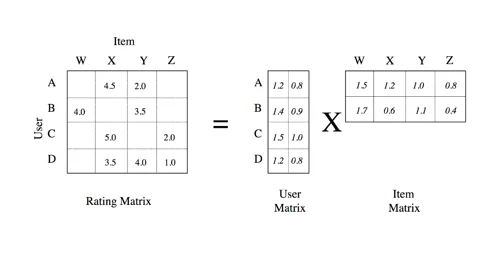

Julien is the Artificial Intelligence & Machine Learning Evangelist for EMEA
. He focuses on helping developers and enterprises bring their ideas to life. In his spare time, he reads the works of JRR Tolkien again and again.
Julien is the Artificial Intelligence & Machine Learning Evangelist for EMEA
. He focuses on helping developers and enterprises bring their ideas to life. In his spare time, he reads the works of JRR Tolkien again and again.
Published: 2018-06-18 | Originally published at AWS Blog
Published: 2018-06-18
Originally published at https://aws.amazon.com/blogs/machine-learning/build-a-movie-recommender-with-factorization-machines-on-amazon-sagemaker/
Recommendation is one of the most popular applications in machine learning (ML). In this blog post, I’ll show you how to build a movie recommendation model based on factorization machines — one of the built-in algorithms of Amazon SageMaker — and the popular MovieLens dataset.
Factorization Machines (FM) are a supervised machine learning technique introduced in 2010 ( research paper , PDF). FM get their name from their ability to reduce problem dimensionality thanks to matrix factorization.
Factorization machines can be used for classification or regression and are much more computationally efficient on large sparse data sets than traditional algorithms like linear regression. This property is why FM are widely used for recommendation. User count and item count are typically very large although the actual number of recommendations is very small (users don’t rate all available items!).
Here’s a simple example: Where a sparse rating matrix (dimension 4×4) is factored into a dense user matrix (dimension 4×2) and a dense item matrix (2×4). As you can see, the number of factors (2) is smaller than the number of columns of the rating matrix (4). In addition, this multiplication also lets us fill all blank values in the rating matrix, which we can then use to recommend new items to any user.

Source: data-artisans.com
In this post, we’re going to use Factorization Machines to build a movie recommender. You can download a companion Jupyter notebook from S3 or Github .
This dataset is a great starting point for recommendation. It comes in multiples sizes. In this blog post we’ll use ml100k: 100,000 ratings from 943 users on 1682 movies. As you can see, the ml100k rating matrix is quite sparse (93.6% to be precise) because it only holds 100,000 ratings out of a possible 1,586,126 (943*1682).
Here are the first 10 lines in the data set: user 754 gave movie 595 a 2-star rating, and so on.
# user id, movie id, rating, timestamp
754 595 2 879452073
932 157 4 891250667
751 100 4 889132252
101 820 3 877136954
606 1277 3 878148493
581 475 4 879641850
13 50 5 882140001
457 59 5 882397575
111 321 3 891680076
123 657 4 879872066
As explained earlier, FM work best on high-dimension datasets. As a consequence, we’re going to one-hot encode user IDs and movie IDs (we’ll ignore timestamps). Thus, each sample in our data set will be a 2,625 Boolean vector (943+1682) with only two values set to 1 with respect to the user ID and movie ID.
We’re going to build a binary recommender (that is, like/don’t like). 4-star and 5-star ratings are set to 1. Lower ratings are set to 0.
One last thing: the FM implementation in Amazon SageMaker requires training and test data to be stored in float32 tensors in protobuf format. (Yes, that sounds complicated 🙂 However, the Amazon SageMaker SDK provides a convenient utility function that takes cares of this, so don’t worry too much about it.
Here are the steps you need to implement:
Let’s get going!
ml-100k contains multiple text files, but we’re only going to use two of them to build our model:
Both files have the same tab-separated format:
As a consequence, we’re going to build the following data structures:
Reminder : Each sample must be a single one-hot encoded feature vector. Yes, you do need to concatenate the one-hot encoded values for user ID, movie ID, and any additional feature you might add. Building a list of distinct vectors (one for the user ID, one for the movie ID, etc.) isn’t the right way.
Our training matrix is now even sparser: Of all 237,746,250 values (90,570*2,625), only 181,140 are non-zero (90,570*2). In other words, the matrix is 99.92% sparse . Storing this as a dense matrix would be a massive waste of both storage and computing power.
To avoid this, let’s use a scipy.lil_matrix sparse matrix for samples and a numpy array for labels.
We should check that we have approximately the same number of samples per class. An unbalanced data set is a serious problem for classifiers.
Slightly unbalanced, but nothing bad. Let’s move on!
Next, we’re going to write the training set and the test set to two protobuf files stored in Amazon S3. Fortunately, we can rely on the write_spmatrix_to_sparse_tensor() utility function. It writes our samples and labels into an in-memory protobuf-encoded sparse multi-dimensional array (AKA tensor).
Then we commit the buffer to Amazon S3. After this step is complete, we’re done with data preparation, and we can now focus on our training job.
The following is our training set in Amazon S3: only 5.5MB . Sparse matrices FTW!
Let’s start by creating an Estimator based on the FM container available in our AWS Region. Then, we have to set some FM-specific hyperparameters (full list in the documentation ):
The other ones used here are optional (and quite self-explanatory).
Finally, let’s run the training job. Calling the fit() API is all it takes, passing both the training and test sets hosted in S3. Simple and elegant.
A few minutes later, training is complete. We can check out the training log either in the Jupyter notebook or in Amazon CloudWatch Logs (in the /aws/sagemaker/trainingjobs log group).
After 50 epochs, test accuracy is 71.5% and the F1 score (a typical metric for a binary classifier) is 0.75 (1 indicates a perfect classifier). Not great, but with all that sparse matrix and protobuf excitement, I didn’t spend much time tuning hyperparameters. Surely you can do better
[01/29/2018 13:42:41 INFO 140015814588224] #test_score (algo-1) :
binary_classification_accuracy
[01/29/2018 13:42:41 INFO 140015814588224] #test_score (algo-1) :
0.7159
[01/29/2018 13:42:41 INFO 140015814588224] #test_score (algo-1) : binary_classification_cross_entropy
[01/29/2018 13:42:41 INFO 140015814588224] #test_score (algo-1) : 0.581087609863
[01/29/2018 13:42:41 INFO 140015814588224] #test_score (algo-1) :
binary_f_1
.000
[01/29/2018 13:42:41 INFO 140015814588224] #test_score (algo-1) :
0.74558968389
We have one last step to cover: model deployment.
All it takes to deploy the model is a simple API call. In the old days (6 months or so ago), this would have required quite a bit of work, even on AWS. Here, just call deploy() .
We’re now ready to invoke the model’s HTTP endpoint thanks to the predict() API. The format for both request and response data is JSON, which requires us to provide a simple serializer to convert our sparse matrix samples to JSON.
We’re now able to classify any movie for any user. Just build a new data set, process it the same way as the training and test set, and use predict() to get results. You should also experiment with different prediction thresholds (set prediction to 1 above a given score and to 0 under it) and see what value gives you the most efficient recommendations. The MovieLens data set also includes movie titles, so there’s plenty more to explore.
Built-in algorithms are a great way to get the job done quickly, without having to write any training code. There’s quite a bit of data preparation involved, but as you saw in this blog post, it’s key to make very large training jobs fast and scalable.
If you’re curious about other Amazon SageMaker built-in algorithms, here are a couple of previous posts:
In addition, if you’d like to know more about recommendation systems, here are a few resources you may find interesting.
As always, thank you for reading. Happy to answer questions on Twitter .
Several of my AWS colleagues provided excellent advice as well as debugging tips, so please let me thank Sireesha Muppala, Yuri Astashanok, David Arpin, and Guy Ernest.
Julien is the Artificial Intelligence & Machine Learning Evangelist for EMEA
. He focuses on helping developers and enterprises bring their ideas to life. In his spare time, he reads the works of JRR Tolkien again and again.
Julien Simon is a renowned AWS expert with extensive experience in machine learning, artificial intelligence, and cloud computing. During his tenure as Global Technical Evangelist for AI & ML at Amazon Web Services, he authored over 60 technical blog posts covering Amazon SageMaker, AWS AI services, and cloud innovations.
© 2025 Julien Simon - AWS Expert | julien.org